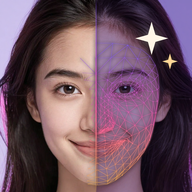

Terms of use
AI Face: Aging & Face Editor (com.krmndigital.aiface) · KRMN Digital · effective 10 November 2026
These terms apply to the Android app AI Face (com.krmndigital.aiface) published by KRMN Digital on Google Play.
The app
AI Face is a photo and face editor that runs on your phone. Effects such as the age filter, makeup, hair colour, reshape, beard, glasses, background and AI art are artistic simulations: they do not predict how a person will really look. The app is provided as is; we do our best to keep it working on current Android phones, but results depend on the photo.
Your content and acceptable use
Your photos and results belong to you; the app does not upload them and we never see them. You are responsible for what you edit and share. Only edit photos you have the right to use, and do not use AI Face to harass, deceive, impersonate or sexualise anyone, to create misleading content about real people, or for anything unlawful. If a result looks offensive or wrong, use Settings → "Report a problem with a result" so we can improve the app.
Pro, trials and refunds
AI Face Pro is sold through Google Play as a monthly or yearly subscription, or as a one-time lifetime purchase. Subscriptions renew automatically until you cancel them in Google Play (Settings → Manage subscription in the app opens the right page). If a free trial is offered, its length, the first charge date and the price are shown before you start it; cancel before the trial ends and you will not be charged. Refunds follow Google Play's policies. Pro is tied to your Google account and can be restored on other phones with "Restore purchases".
Ads
The free version shows ads served by Google AdMob. Rewarded ads are always optional. Pro removes all ads.
Liability
To the extent permitted by law, KRMN Digital is not liable for indirect damages or lost data arising from the use of the app. Nothing here limits rights you have as a consumer under the law of your country.